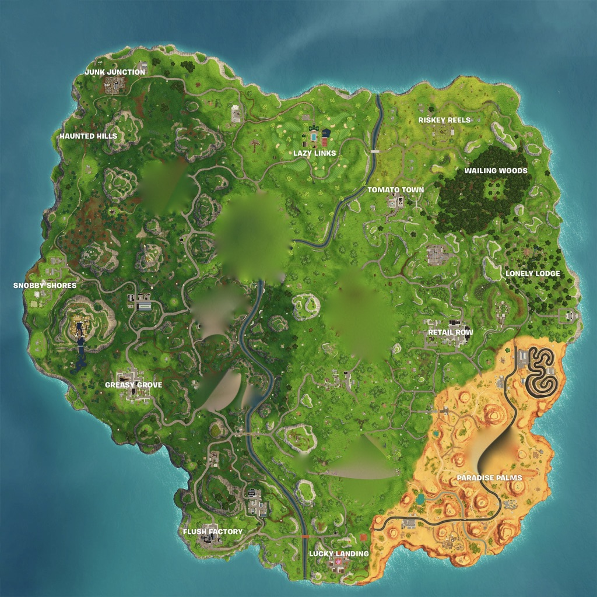

Fortnite For Noobs
The ultimate guide for survival (and just that)!
Do you suck at fornite ? Have zero kills and is always killed? We are here to help! This is a Guide on how to camp like a pro ! just follow these steps and you'll be a pro noob in no time !
for more tips watch this clip
step one - landing

- DO NOT land around the middle of the map or any big city/town
- Land far away towards the end of the map
- Try to land high up or on abandoned houses
step two - collecting
- Avoid collecting close range guns because they require close combat and we are NOT going to do that.
- Good guns are :
- Snipers
- Assault rifles
- Supressed guns
- Find bandages, shield potions and medical kits
- Building resources: All of them!
- Bushes- for all you bush campers out there!
step three - suviving the storm
- Stay close to the edge of the storm but plan your route ahead so you dont get stuck (beware of cliffs and mountains)
- Use autorun when running from the storm
- Get your bandages ready! It might just save your life!